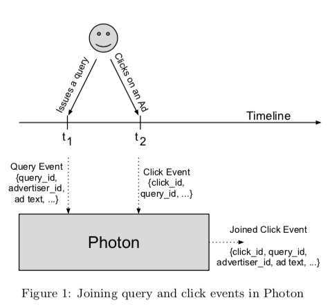
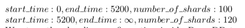
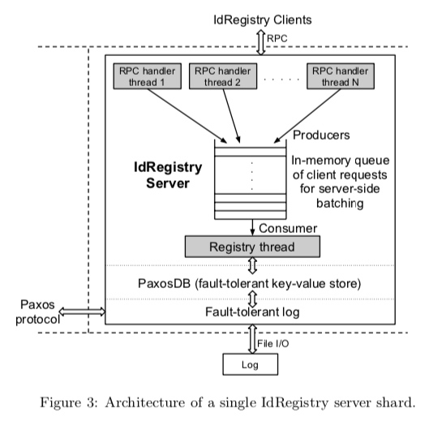
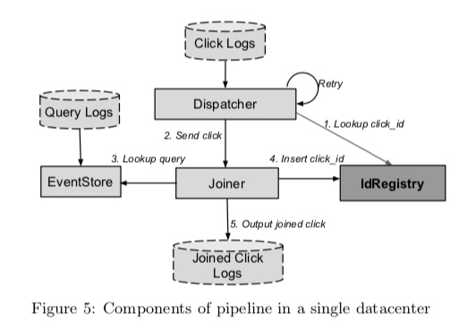

原文：Photon: Fault-tolerant and Scalable Joining of Continuous Data Streams
Photon 是谷歌广告系统中用于 join 广告曝光日志流和点击日志流的一套系统。
数据流 join 为什么没用 flink 这类通用的流式处理框架？
数据流 join，特别是广告数据流 join，技术上难在哪里？
任一条流都可能乱序或延迟，广告点击涉及计费的问题，计费不能多算广告主的钱，也要尽可能避免漏计费，降低广告收入损失。
该系统在谷歌生产环境中每分钟处理百万级的事件，端到端延迟小于 10 秒（注：对于广告实时竞价的广告主而言，这个延迟的长短很重要）。
广告曝光、点击整体流程为：
- 用户搜索某个关键词时，谷歌的服务器会返回广告和搜索结果。广告服务器会将广告 query 和结果数据作为日志发送到多个日志数据中心（multiple logs-datacenters），最终持久化存储在 GFS 上。每次 query 都会被赋予一个唯一性 ID query_id
- 对于搜索结果中的广告，用户可能会点击。广告点击会触发一次请求，谷歌的后端服务器将请求重定向到广告主的网站。在重定向之前，谷歌服务器会将点击事件记录到日志中，发送到多个日志数据中心。点击事件日志中包含广告曝光的 query_id，点击事件也会被赋予一个唯一性 ID click_id
计费是在点击之后，但计费所需要的广告出价等信息是在曝光请求中记录的，出于数据敏感性、带宽、请求处理延迟等多方面的考量，计费相关的信息并不会返回到用户客户端，也就是说点击请求中不会包含计费直接相关的信息，需要将 点击日志 和 曝光日志 做一次 join，得到一条完整的上下文日志，才方便做后续计费等处理。

论文中提了到该系统解决了几个技术挑战点：
- 仅处理一次语义（exactly-once semantics）：实际上达到的是 最多处理一次语义 （At most once），也就是绝对不能多算钱，然后尽可能避免少算钱
- 自动化的跨数据中心容错：也就是多数据中心部署，如果有一个数据中心不可用（比如 网络问题），也不会影响系统正常处理数据
- 横向扩展性高：也就是加机器就能应对消息量增长
- 低时延
- 流乱序
- 主流延迟（delayed primary stream）：这里说的”主流“是曝光日志流
在我看来，该系统的亮点主要在前 3 点，后边细说。
为解决 1、2 挑战点，系统引入一个服务模块：IdRegistry，这个服务的功能：提供点击事件 id（click_id） 的存储和查询，如果某个 click_id 可以从 IdRegistry 中查到，则表示该点击事件已经处理过了，不要再次处理。
并且，多数据中心都部署一套 Photon，但 IdRegistry 共享一个，多套 Photon 系统的输入相同，那么 IdRegistry 除了提供去重的功能，还提供了负载均衡的功能。正常情况下，假设 N 个数据中心，每个数据中心 Photon join 产出的日志数据量为总量的 1/N。
当某个数据中心的 Photon 不可用时，相当于其负载动态地重新分配到其它数据中心，虽然总体能力上降低了，但只要处理能力有冗余，就不会影响正常处理。
那么很明显，IdRegistry 很可能成为系统的短板；另外，曝光/点击的唯一性 ID 如何生成？如果由一个中心服务来提供唯一性 ID 的生成，那么这个服务也会成为系统的短板。
所以，系统没有选择一个中心服务来生成唯一性 id，而是将 id 设计为包含3个部分：ServerIP、ProcessID、Timestamp。由于日志文件中行之间大致是按照时间戳有序的，所以 id 中包含时间戳的一个额外好处是：根据 id 即可大致定位日志内容。另外，还有一个和横向扩展性相关的好处，后边细说。
IdRegistry 的角色至关重要，所以将其实现为一个基于 Paxos 协议的分布式系统，根据 CAP 原则，可用性（此处是指吞吐能力）受限。解决方案是：
1、提高单机处理能力：服务端攒批处理，尽可能减少网络往返次数导致的等待（特别是：由于 IdRegistry 是跨地域分布式，部署上节点之间最大延迟是 100ms 左右）
2、分片（Sharding）：根据 click_id 进行分片，但如果是固定分片，那么随着以后业务量增大，不好扩展。Photon 使用了一种基于时间段动态分片方案，这个方案基于 click_id 自带时间戳。大致逻辑是：使用一个配置，内容大致如下：

对于每个 click 日志，先根据 click_id 中的时间戳，判断分片数，并计算对应的分片 id。

系统的模块关系图如下所示：

Photon 的 Dispatcher 模块并没有以 Kafka 这种消息队列作为输入，而是直接监听文件系统中的日志文件变更，这一点有点奇怪，不是特别理解。
Joiner 负责实际的 join 工作，由于 3、4 都比较耗时，所以为了尽可能减少 Joiner 的工作量，Dispatcher 将点击事件日志发送给 Joiner，会先到 IdRegistry 中查一下该事件是否已被处理过，从而起到过滤作用。因多数据中心部署，实际过滤比为：$ \frac{N-1}{N} $。
为了确保 Joiner 高可用，Joiner 是无状态的，向 Dispatcher 提供 RPC 接口，Joiner 内部有限流，以保证不会因为单个 Joiner 负载过大，导致处理时延增大。Dispatcher 调用 Joiner 失败后会重试，重试使用的是指数退避算法。但处理失败的点击事件，是另外存储在 GFS 上，应该是由另外的线程来负责重试，不会影响正常的事件处理。
当 Joiner 收到一个点击事件的处理请求时，会根据点击日志数据中的 query_id 从 EventStore 查询曝光日志详情，但因为曝光日志数据流可能会有延迟，所以可能会查不到，查不到且发现 click_id 中的时间戳早于某个阈值（比如是 N天前的一个事件），Joiner 会将该 click_id 标记为不可 join，然后向 Dispatcher 返回成功；如果 click_id 中的时间戳不早于阈值，则向 Dispatcher 返回失败，由 Dispatcher 来重试。
为了确保不会多计费，Joiner 在将 join 结果写入 Joined Click Logs 之前，会向 IdRegistry 注册 click_id。
假设注册实际上已成功，但因网络原因或 RPC 调用超时 Joiner 未收到成功响应，此时怎么办？Joiner 向 IdRegistry 注册 click_id 时，会附带一个额外的 唯一性 token，也包含3个部分：Joiner 服务器地址、进程 ID、时间戳，IdRegistry 会把这个唯一性 token 作为值存储下来，所以对于这种情况，Joiner 可以重复发注册请求，如果 IdRegistry 根据 token 发现已注册成功的 click_id 和当前收到的 click_id 来自同一个 Joiner，则也会返回注册成功。
假设注册成功，合并结果写入异常，异常分为 2 种，需要解决：
- 写入之前，Joiner 节点宕机或重启
- 合并结果实际写入成功，但因为网络原因，Joiner 未收到响应
为尽可能减少因某个 Joiner 节点硬件异常导致的 join 结果丢失，IdRegistry 对于单个 Joiner 的请求有限流，这个限流会间接导致 Joiner 对 Dispatcher 限流。
为了进一步减少因为上面2种异常情况以及其它异常导致的 Join 结果丢失，Photon 还提供一个校验系统：获取原始点击事件日志，如果该日志 click_id 在 IdRegistry 中存在，但合并结果中不存在，则根据 IdRegistry 存储的对应 click_id 的 token，判断对应的 Joiner 是否存活，如果存活，则交于该 Joiner 重新处理，如果对应的 Joiner 已不存在，则从 IdRegistry 中删除该 click_id 记录，然后交于任一 Joiner 来处理，都一样。
EventStore 获取原始的曝光日志，向 Joiner 提供查询接口，返回原始的曝光日志内容。
基于时间局部性，EventStore 内部分 2 层，第一层为 CacheEventStore - 一个类似 Memcached 的 KV 内存映射，K 是 query_id，V 是曝光日志内容，基于一致性哈希算法根据 query_id 进行分片，缓存几分钟最新的曝光日志数据，可以命中 90% 左右的查询请求。
如果 CacheEventStore 查询 miss，则交于第二层 LogsEventStore 来处理。LogsEventStore 对 query_id 和 曝光日志所在的日志文件及目标起始行（因为日志文件数据大致按时间戳有序，根据 query_id 中的时间戳大致可以知道查询的起始行）建立索引（实际存储在 BigTable 中），查询时，先根据 query_id，查到目标日志文件和起始行，然后从日志文件中读取原始曝光日志内容。